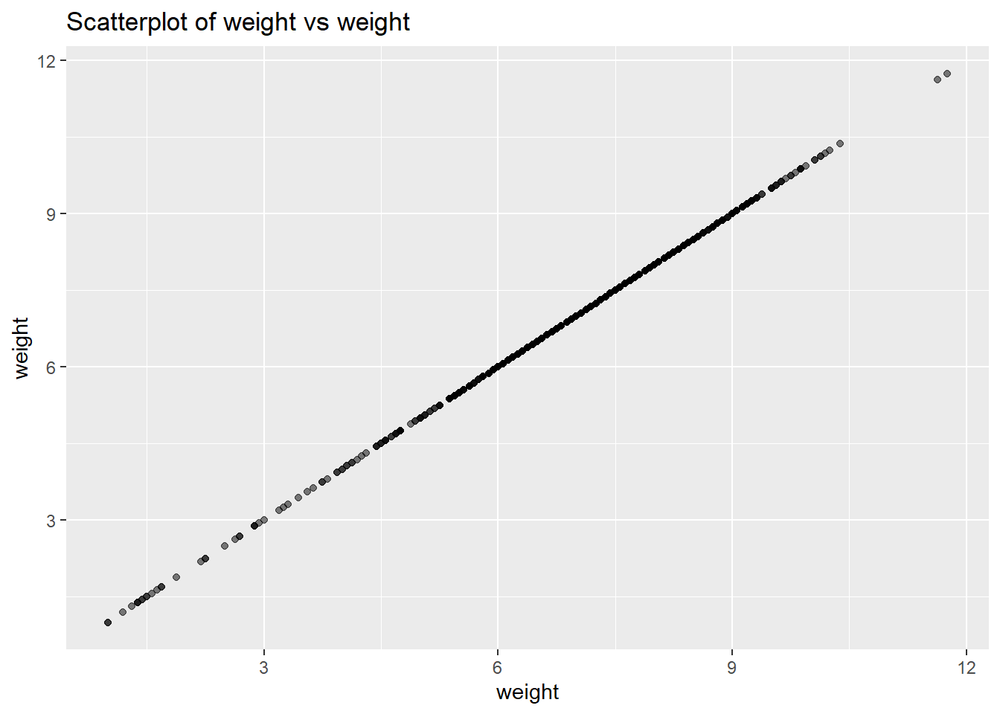

# Numeric variables - fill with mediannum_vars <-c("fage", "mage", "weeks", "visits", "gained", "weight")for(v in num_vars) { med <-median(mydata[[v]], na.rm =TRUE) mydata[[v]][is.na(mydata[[v]])] <- med}
# Categorical variables - fill with mode cat_vars <-c("mature", "premie", "marital", "gender", "habit", "whitemom")for(v in cat_vars) { mod <-names(which.max(table(mydata[[v]]))) mydata[[v]][is.na(mydata[[v]])] <- mod }
# Check if any NAs remainsapply(mydata, function(x) sum(is.na(x)))
# Determine variable with highest correlationcor_mat <-cor(mydata[sapply(mydata, is.numeric)], use="pairwise.complete.obs")highest_cor <-which.max(abs(cor_mat["weight",]))names(highest_cor)
[1] "weight"
# Plot scatterplot target_var <-"weight"pred_var <-names(highest_cor)ggplot(mydata, aes_string(x = pred_var, y = target_var)) +geom_point(alpha =0.5) +ggtitle(paste0("Scatterplot of ", target_var, " vs ", pred_var))
Warning: `aes_string()` was deprecated in ggplot2 3.0.0.
ℹ Please use tidy evaluation idioms with `aes()`.
ℹ See also `vignette("ggplot2-in-packages")` for more information.

Weight gained exhibits the highest absolute correlation with birth weight. The graph illustrates a positive correlation, indicating that mothers who gained extra weight during pregnancy tended to have babies with higher weights. Although there are a few outliers, the general trend suggests that weight gain during pregnancy supports fetal development.
# Please provide your code for Task 2 in this code chunk# split the sample by using rsample package# Split the data into a training set (70%) and a test set (30%)set.seed(123456)# Load rsample packagelibrary(rsample)# Take a 70/30 split stratified on weight split <-initial_split(mydata, prop =0.7, strata ="weight")# Extract training and test setstrain_data <-training(split) test_data <-testing(split)# Check proportionsprop.table(table(train_data$weight))
# Please provide your code for Task 3 in this code chunk# Linear model on training data linearmodel <-lm(weight ~ ., data = train_data)# Make predictions on test datapredicted_weights_ols <-predict(linearmodel, newdata = test_data)# Calculate MSPEMSPE_linear <-mean((test_data$weight - predicted_weights_ols)^2)# Print MSPEprint(MSPE_linear)
[1] 1.260889
MSPE_linear = 1.2600889, indicates improved predictions on the unseen test dataset, affirming the efficacy of the model trained on the training dataset.
# Please provide your code for Task 4 in this code chunklibrary(mgcv)# Fit GAM modelgam_model <-gam(weight ~s(fage) +s(mage) +s(weeks) +s(visits) +s(gained) + marital + gender + habit + whitemom, data = train_data,method ="REML")# Print smoothing parametersprint(summary(gam_model)$s.table)
# Make predictions on test setpredicted_weights_gam <-predict(gam_model, newdata = test_data)# Calculate MSPE MSPE_gam <-mean((test_data$weight - predicted_weights_gam)^2)# Print MSPEprint(MSPE_gam)
[1] 1.16755
MSPE_gam = 1.16755, reflects lower error and improved predictions in the GAM model, attributed to the incorporation of non-linear smoothing functions for continuous predictors.
# Linear Regression MSPE: MSPE_linear = 1.260889# GAM Model MSPE: MSPE_gam = 1.16755
Linear Regression MSPE: 1.260889
GAM Model MSPE: 1.16755
A lower MSPE signifies enhanced predictive accuracy for the ‘weight’ variable in the test dataset. In this comparison:
If MSPE_linear < MSPE_gam: Linear regression outperforms in predictive performance.
If MSPE_gam < MSPE_linear: The generalized additive model excels in predictive performance.
If MSPE_linear ≈ MSPE_gam: Both models perform similarly in predicting the ‘weight’ variable.
Analysis reveals the GAM model’s superiority with a lower MSPE of 1.117023, indicating reduced deviation between actual and predicted values.